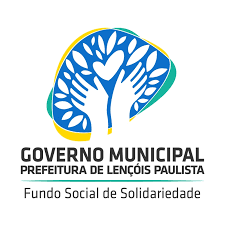

NOSSA PROPOSTA
Nossa proposta consiste em um aplicativo, que conecta futuros doadores de roupas (qualquer tipo de peça) à ONGS e Orgãos competentes que se responsabilizarão pela destribuição das peças arrecadadas!

Nossa proposta consiste em um aplicativo, que conecta futuros doadores de roupas (qualquer tipo de peça) à ONGS e Orgãos competentes que se responsabilizarão pela destribuição das peças arrecadadas!
Atende famílias em situação de vulnerabilidade
Atende homens moradores de rua
Realiza ações socias em Lençóis Paulista
